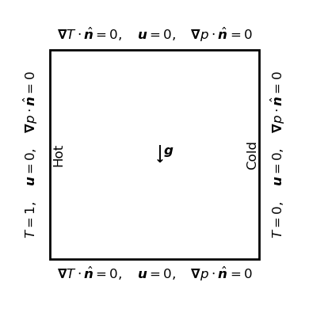
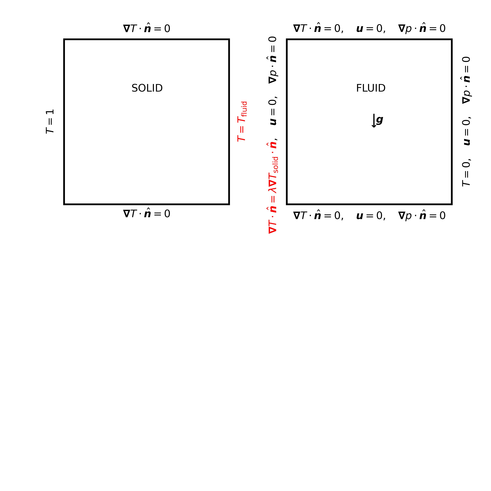
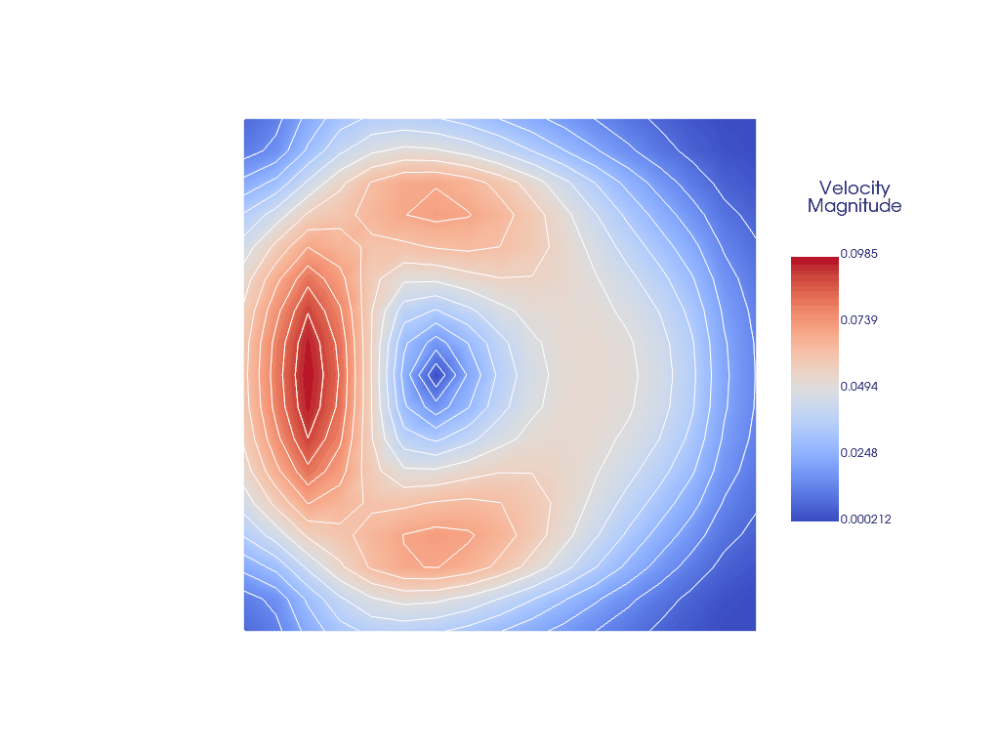

Natural convection for CHT
2025-07-23
Problem Setup and Model
Natural convection in a differentially heated cavity with \(\boldsymbol{u}\), \(p\), and \(T\) being the vector velocity field, pressure and temperature scalar fields, respectively.
Following (Xin and Quéré 2006), we have the nondimensional form of the governing equations for natural convection in cavities with adiabatic horizontal walls. \[
\begin{aligned}
&\partial_t \boldsymbol{u} + \boldsymbol{u} \cdot \boldsymbol{\nabla}\boldsymbol{u} + {\rm Pr} \boldsymbol{\nabla} p + \frac{{\rm Pr}}{\sqrt{\mathrm{ Ra}}} \boldsymbol{\Delta} \boldsymbol{u} - {\rm Pr} T \mathbf{\hat{e}}_y &= 0 \\
&\boldsymbol{\nabla} \cdot \boldsymbol{u} &= 0, \\
&\partial_t T + \boldsymbol{u}\cdot \boldsymbol{\nabla} T + \frac{1}{\sqrt{\mathrm{ Ra}}} \boldsymbol{\Delta} T &= 0,
\end{aligned}
\] \(\quad \boldsymbol{\cdot}\) Rayleigh (\({\rm Ra}\)) and Prandtl (\({\rm Pr}\)) numbers are dimensionless constants,
\(\quad \boldsymbol{\cdot}\) \(\mathbf{\hat{e}}_y\) is the normal vector for gravity in negative y-direction
Numerical Implementation
For both fluid and temperature fields:
- Diffusion, Divergence and Gradient operators are solved implicitly (linear solver).
- Convection\(\ \!^{\boldsymbol{\star}}\) terms and Buoyancy forcing are added explicitly as source terms.
\[ \color{blue}{ \begin{bmatrix} I + \Delta t \frac{{\rm Pr}}{\sqrt{\mathrm{ Ra}}} \boldsymbol{\Delta} & \Delta t\; {\rm Pr}\; \boldsymbol{\nabla} & 0 \\ -\boldsymbol{\nabla} & 0 & 0 \\ 0 & 0 & I + \Delta t \frac{1}{\sqrt{\mathrm{ Ra}}} \boldsymbol{\Delta} \end{bmatrix} } \begin{bmatrix} \boldsymbol{u}^{n+1} \\ p^{n+1} \\ T^{n+1} \end{bmatrix} = \color{green}{ \begin{bmatrix} \boldsymbol{u}^{n} - \Delta t \cdot \text{conv}(\boldsymbol{u}^{n}) + {\rm Pr}\; T^{n}\; \hat{\mathbf{e}}_y \\ 0 \\ T^{n} - \Delta t \cdot \text{conv}(T^{n}) \end{bmatrix}} \]
\[ \color{blue}{A} x = \color{green}{b} \]
auto natural_convection = samurai::make_block_operator<3, 3>(
id_vel + dt * diff_vel, dt * Pr * grad_p, zero_temp,
-div_vel, zero_p, zero_p,
zero_vel, zero_p, id_temp + dt * diff_temp
);auto natural_convection_solver = samurai::petsc::make_solver<true>(natural_convection);
natural_convection_solver.set_unknowns(velocity_np1, pressure_np1, temperature_np1);
configure_direct_solver(natural_convection_solver);Inside time loop
// rhs
rhs_vel = velocity - dt * conv_vel(velocity);
samurai::for_each_cell(mesh[mesh_id_t::cells], [&]( auto& cell )
{
rhs_vel[cell][1] += -Pr * temperature[cell]; // Gravity term in -ve y-direction
if (cell.corner(0) == 0. && cell.corner(1) == 0.)
{
// std::cout << "Setting reference pressure in cell with origin coords" << std::endl;
pressure_np1[cell] = 0.; // Set reference pressure for unique solution
}
});
rhs_temp = temperature - dt * conv_temp(temperature);
// Solve the system
natural_convection_solver.solve(rhs_vel, rhs_p, rhs_temp);\(\!^{\boldsymbol{\star}}\!\!\) Convection operators
- Linear convection of scalar with fixed velocity
Definition
Call
Implements
\(\boldsymbol{u}_{\rm {\scriptsize upwind}} \cdot \boldsymbol{\nabla}\)
- Nonlinear convection of velocity vector
Definition
Call
Implements
\(\boldsymbol{u}_{\rm {\scriptsize upwind}} \otimes \boldsymbol{u}\) \(\quad\) ⚠️ \(\ \) It works for incompressible fluid as we explicitly solve for \(\nabla \cdot \boldsymbol{u} = 0\) (??).
Result: Natural Convection (standalone)
- \({\rm Ra} = 1{\rm E+}2\), \({\rm Pr} = 1\), \(T_f = 5\)
- \(\ell = [6, 4]\), \(\epsilon_{\rm MR} = 2{\rm E-4}\), \(MR_{\rm regularity} = 1\)

Remarks
- AMR is not well utilised
- Ra \(>\) 1E+3 : code diverges (explicit buoyancy forcing?, explicit nonlinear terms, finer mesh ?)
Result: Natural Convection (standalone)
- \({\rm Ra} = 1{\rm E+}3\), \({\rm Pr} = 1\), \(T_f = 2\)
- \(\ell = [6, 4]\), \(\epsilon_{\rm MR} = 2{\rm E-4}\), \(MR_{\rm regularity} = 1\)

Solid-Fluid CHT with Natural Convection : The setup
Dirichlet-Neumann coupling
where, \(\lambda\) = ratio of thermal conductivities of fluid (\(=1/\sqrt{{\rm Ra}}\)) to solid.
Solid-Fluid CHT with Natural Convection: A first result
(SAMURAI + PETSc + CWIPI)
- \(T_{\rm hot} = 1\), \(\lambda = 1\), \({\rm Ra} = 1{\rm E+}2\), \({\rm Pr} = 1\)
- \(\ell_{\rm left} = 4\), \(\ell_{\rm right} = 5\)
- \(\Delta t_{\rm coupling} = 0.1\), \(T_f = 40\)
Remarks
- AMR not implemented
- First-order BE: slower (probably inefficient implimentation) than ponio
- Ponio: solver implementation with PETSc state vector created by block assembly (possible solution found with JM, not implemented)
Solid-Fluid CHT with Natural Convection: Study 1 (base)
- \(T_{\rm hot} = 1\), \(\lambda = 2\), \({\rm Ra} = 1{\rm E+}2\), \({\rm Pr} = 1\)
- \(\ell_{\rm left} = 4\), \(\ell_{\rm right} = 5\)
- \(\Delta t_{\rm coupling} = 0.1\), \(T_f = 40\)
mpirun -n 2 tests/cht_solid_fluid_cwipi_samurai -t1 40 -dt 0.1 -T_hot 1 -lambda 2 -Ra 100 -visu_freq 10 -export_velocity
Solid-Fluid CHT with Natural Convection: Study 2 (\(\lamda\))
- \(T_{\rm hot} = 1\), \(\lambda = 4\), \({\rm Ra} = 1{\rm E+}2\), \({\rm Pr} = 1\)
- \(\ell_{\rm left} = 4\), \(\ell_{\rm right} = 5\)
- \(\Delta t_{\rm coupling} = 0.1\), \(T_f = 40\)
mpirun -n 2 tests/cht_solid_fluid_cwipi_samurai -t1 40 -dt 0.1 -T_hot 1 -lambda 4 -Ra 100 -visu_freq 10 -export_velocity
Solid-Fluid CHT with Natural Convection: Study 3 (Ra)
- \(T_{\rm hot} = 1\), \(\lambda = 4\), \({\rm Ra} = 1{\rm E+}3\), \({\rm Pr} = 1\)
- \(\ell_{\rm left} = 4\), \(\ell_{\rm right} = 5\)
- \(\Delta t_{\rm coupling} = 0.1\), \(T_f = 40\)
mpirun -n 2 tests/cht_solid_fluid_cwipi_samurai -t1 40 -dt 0.1 -T_hot 1 -lambda 4 -Ra 1000 -visu_freq 10 -export_velocity
Solid-Fluid CHT with Natural Convection: Study 4 (\(T_{\rm hot}\))
- \(T_{\rm hot} = 2\), \(\lambda = 4\), \({\rm Ra} = 1{\rm E+}3\), \({\rm Pr} = 1\)
- \(\ell_{\rm left} = 4\), \(\ell_{\rm right} = 5\)
- \(\Delta t_{\rm coupling} = 0.1\), \(T_f = 40\)
mpirun -n 2 tests/cht_solid_fluid_cwipi_samurai -t1 40 -dt 0.1 -T_hot 2 -lambda 4 -Ra 1000 -visu_freq 10 -export_velocity